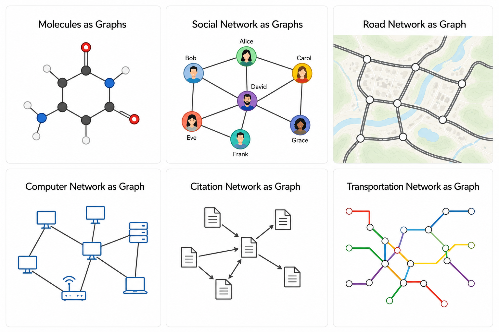
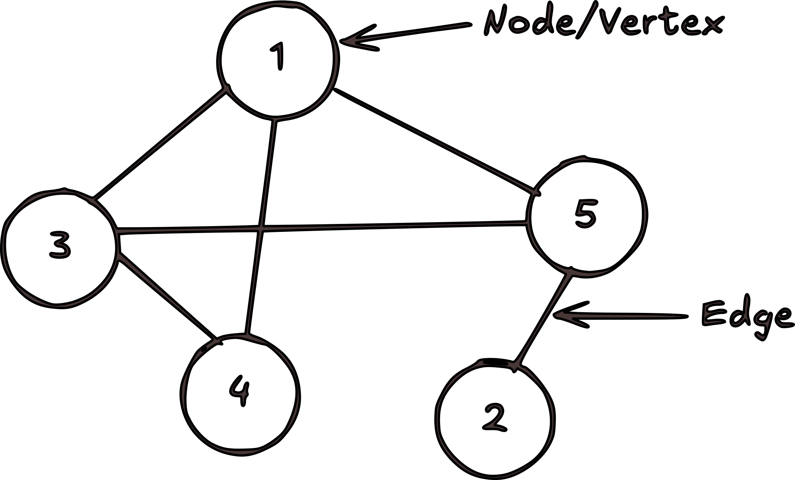
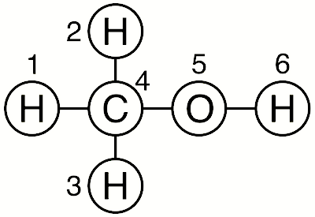

The difficulty for machine learning with molecules is the choice and computation of “descriptors”. Graph neural networks (GNNs) provide a way around the choice of descriptors because GNNs are designed to take molecules directly as input.
Okay, but what is a Graph – …a collection of vertices (V) connected by edges (E).
For us, nodes can represent atoms, and edges can represent bonds or interactions between atoms.
⭕ Graphs are all around us.

But why graphs for molecules – Because they are
- intuitive data structures for representing materials,
- can naturally capture the relationships between atoms and their neighbors.
⭕ Remember a graph is a collection of vertices (V) connected by edges (E).

Indeed molecules are graphs. Think of atoms as vertices and bonds as edges.
